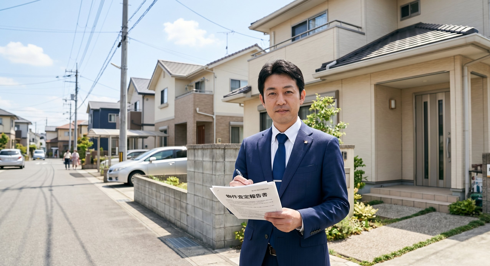

← コラム一覧に戻る

売却方法によって手元に残るお金や期間が大きく変わります
「実家の空き家を売りたいけど、どこに頼めばいいのかわからない」――鹿児島でもこうしたご相談をよく受けます。空き家の売却には大きく分けて「買取」と「仲介」の2つの方法があります。それぞれの違いを理解して、自分に合った方法を選ぶことが大切です。
買取とは何か
買取とは、不動産会社が直接物件を購入する方法です。TAMARIEのような買取専門業者が、査定額を提示してオーナーから直接買い取ります。
買取のメリット
最大のメリットはスピードです。買主を探す必要がないため、早ければ相談から数週間〜1〜2ヶ月で売却が完了します。また、仲介手数料がかからず、物件の状態が悪くても（古い・雨漏りがあるなど）そのまま買い取ってもらえるケースがほとんどです。「引っ越しして空き家になっているので早く手放したい」という方には特に向いています。
買取のデメリット
仲介に比べると売却価格は低くなる傾向があります。一般的に市場価格の6〜8割程度が目安です。ただし、仲介手数料・修繕費・維持管理費がかからない点を考慮すると、手残りがそれほど変わらないケースもあります。
💡 買取が向いているケース
- 早く現金化したい
- 建物が古い・傷みがある
- 遠方に住んでいて管理が難しい
- 相続人が複数いてとにかく早く解決したい
- 仲介で長期間売れ残るのを避けたい
仲介とは何か
仲介とは、不動産会社が買主を探して売買を仲立ちする方法です。一般的な不動産売却の流れで、市場に物件を公開して購入希望者を募ります。
仲介のメリット
市場価格に近い金額で売却できる可能性があります。立地が良く状態の良い物件であれば、買取より高い金額になるケースも多いです。
仲介のデメリット
買主が見つかるまで数ヶ月〜1年以上かかることもあります。その間も固定資産税・管理費は発生し続けます。また、売却時に仲介手数料（売却価格の約3%＋6万円）が発生します。状態の悪い物件は買い手がつきにくいこともあります。
| 比較項目 | 買取 | 仲介 |
|---|---|---|
| 売却価格 | 市場価格の6〜8割程度 | 市場価格に近い |
| 売却期間 | 数週間〜2ヶ月 | 数ヶ月〜1年以上 |
| 仲介手数料 | 不要 | 売却価格の約3%＋6万円 |
| 物件の状態 | 問わない場合が多い | 状態が悪いと売りにくい |
| 向いている人 | 早く・確実に売りたい | 高く売ることを優先したい |
TAMARIEでの買取の流れ
TAMARIEでは、以下の流れで空き家の買取を進めています。
📋 買取の流れ（TAMARIEの場合）
- ① 無料相談・査定依頼：お電話・メール・LINE等でご連絡ください
- ② 現地調査・査定：専門スタッフが物件を確認し、査定額を提示（無料）
- ③ 条件のご確認・合意：価格・引き渡し時期など、ご納得いただけるまで相談
- ④ 売買契約の締結：契約書にご署名・捺印
- ⑤ 決済・引き渡し：代金のお支払いと物件の引き渡しで完了
TAMARIEは査定・相談・現地調査がすべて無料です。「まず金額を知りたいだけ」という段階でのご相談も大歓迎です。